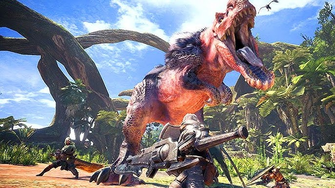
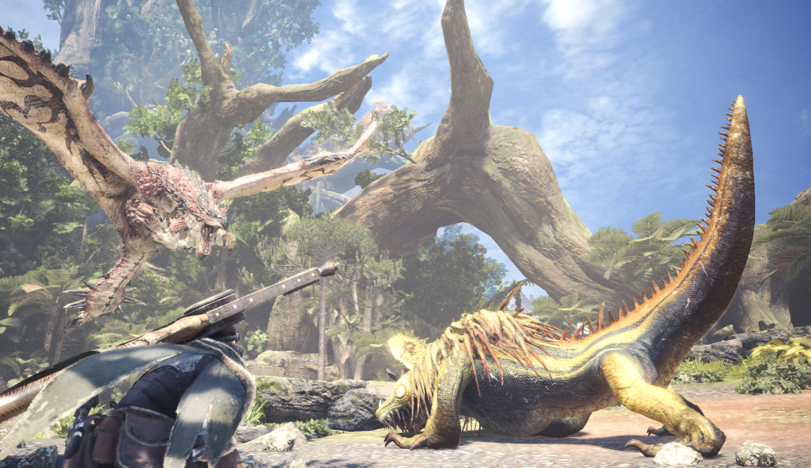

Monster Hunter World
Publishing Info
- by: Capcom
- Developed by: Capcom
- Released: January, 2020
Description
Monster Hunter World is a 3rd person Action RPG(Role Playing Game) and is the 5th generation of the Monster Hunter Game Series. You play as a hunter arriving in a newly established land called "The New World". As a hunter your goal is to hunt the monsters that roam the land. Once a monster is defeated the player can take the materials from the monster and use them to craft new weapons and armor to power up. As you power up you are allowed to hunt stronger and stronger monsters and investigate the mysterious land.
Game Categories
- Genre: Action RPG
- Perspective: 3rd Person
- Visual: Adjustable
- Gameplay: Fast Paced
Images

Quote
Whether or not it's the best, this is certainly the most audacious Monster Hunter game. World takes a dramatic leap into a look, feel, and size that feels truly new, simultaneously staying true to the series’ ideals by maintaining the addictive loop of combat, intimidating monsters and meaningful upgrades that fans love. The sheer depth and commitment required is still intense, but it clearly isn’t Capcom’s aim to court a casual crowd. This is as all-consuming and incredible a ride as ever. -- https://www.ign.com/articles/2018/01/25/monster-hunter-world-review